ChevronLeftChevronRightChevronDownChevronUpPlusXCheck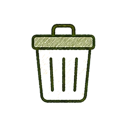
삭제Trash2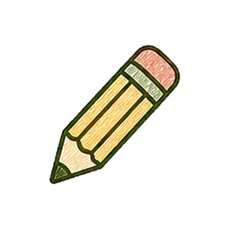
편집Pencil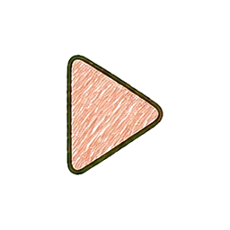
재생Play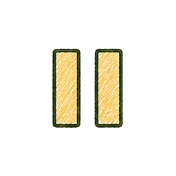
일시정지PauseSkipForward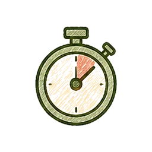
타이머TimerClockBellLock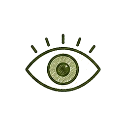
보기Eye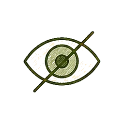
숨기기EyeOff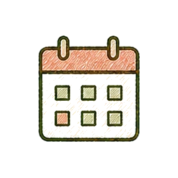
달력Calendar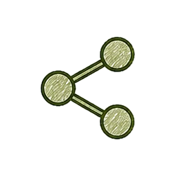
공유Share2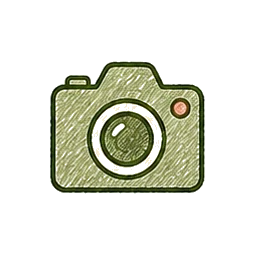
카메라CameraCheckCircle2CheckSquare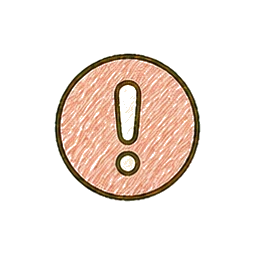
주의AlertCircleInfoNavTree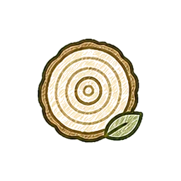
통계NavBarsNavPeople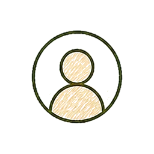
마이페이지NavProfile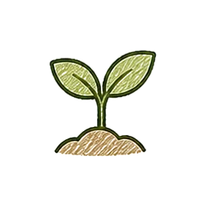
새싹SproutTargetFlameChurch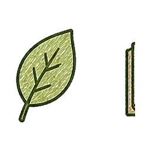
운동·건강DumbbellBookOpenBarChart3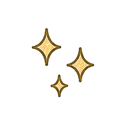
반짝임Sparkles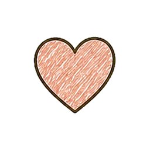
응원HeartStarSunrise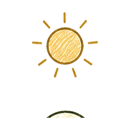
낮SunMoon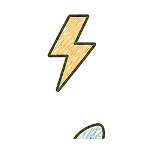
빠른 실행Zap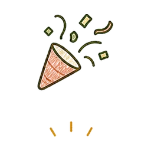
축하PartyPopperSmileFrownCloud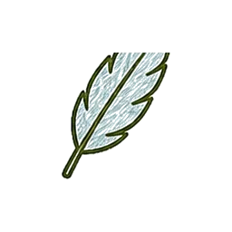
묵상 기록Feather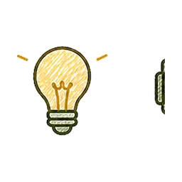
아이디어LightbulbFitnessLeaf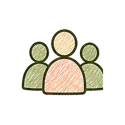
사용자 그룹Users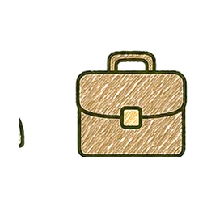
직장Briefcase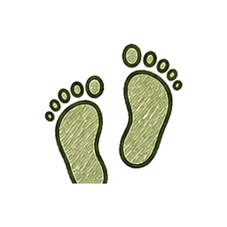
걷기FootprintsCrossListTodoClipboardList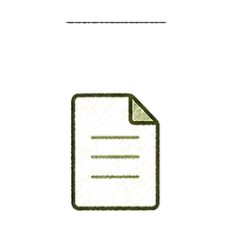
문서FileText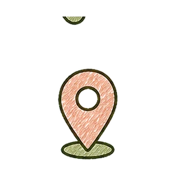
위치MapPin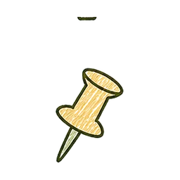
고정Pin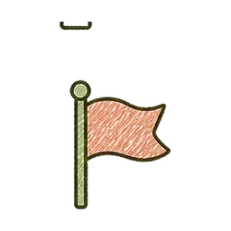
신고·목표 지점FlagShield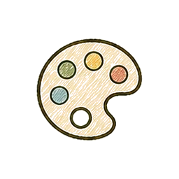
팔레트PaletteMagicWand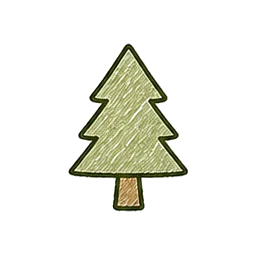
나무 보상TreePine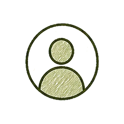
사용자UserCircle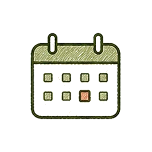
날짜 기록CalendarDays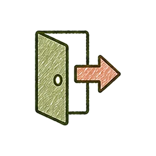
로그아웃LogOut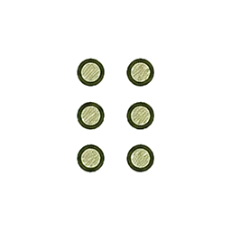
순서 변경GripVertical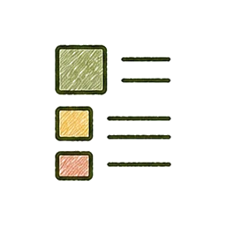
목록 보기LayoutList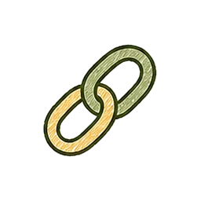
연결Link2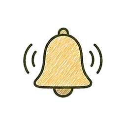
알림 켜짐BellRing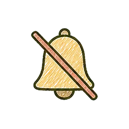
알림 꺼짐BellOffXCircle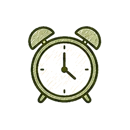
알람 시계AlarmClockPlaceholderLeaf